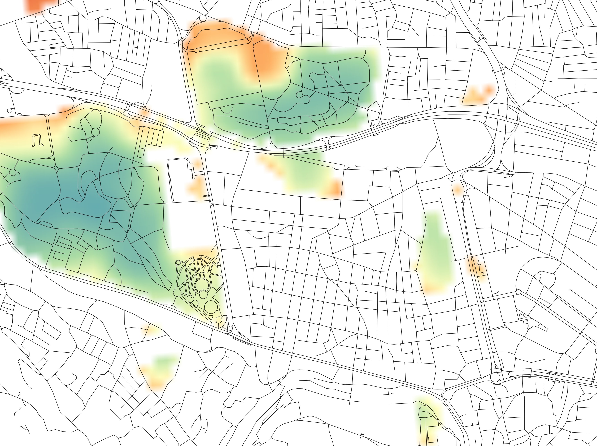
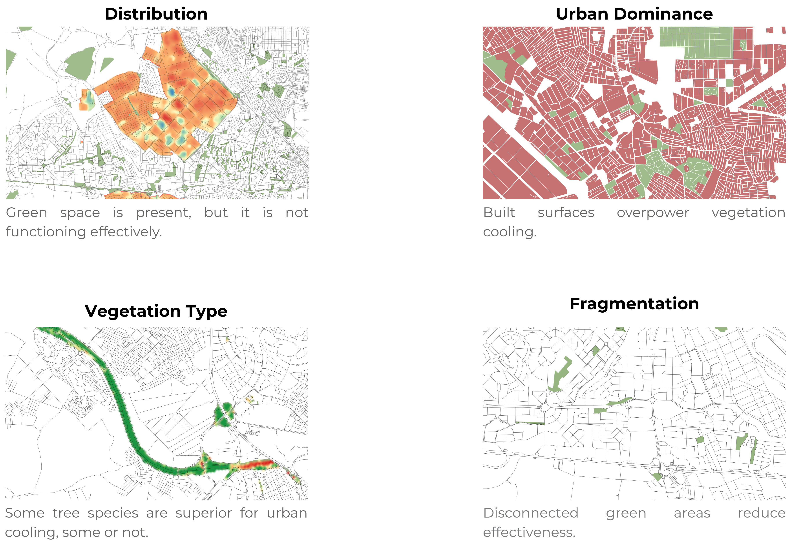

Urban Heat Island Intensity in Bursa
Identifying Priority Cooling Zones for Green Infrastructure Planning in Bursa City
Abstract
Urban areas in Bursa are 1–5 °C hotter than surrounding rural landscapes, a gap that intensifies during summer due to prolonged solar radiation and the dominance of urban materials. This study quantifies the Urban Heat Island (UHI) effect using a remote-sensing workflow built on Landsat 8/9 imagery and processed in GRASS GIS, deriving Land Surface Temperature (LST) and the Urban Thermal Field Variance Index (UTFVI) for winter and summer 2025. District-level analysis is combined with green-space-per-capita accounting against the statutory 10 m²/person standard. The central finding is a paradox: green-space quantity alone does not determine cooling performance. Nilüfer records high green space per capita yet still exhibits high LST, indicating that location, quality, connectivity, and vegetation type — not area targets — govern thermal outcomes.

1. Why the City Gets Hotter
The UHI effect in Bursa is driven by rapid urbanization and land-cover change. Vegetation loss reduces evapotranspiration, shifting energy into sensible heat rather than cooling processes. Four mechanisms operate together:
| Driver | Mechanism |
|---|---|
| Reduced vegetation | Lower evapotranspiration and less shading increase surface heating. |
| Urban materials | Concrete and asphalt store heat during the day and release it at night. |
| Urban canyon effect | Dense buildings trap radiation and limit heat dissipation. |
| Anthropogenic heat | Transport and infrastructure contribute additional heat energy. |
1.1 Urban Materials Matter
Asphalt, concrete, and brick absorb heat during the day and release it slowly at night. This delays cooling and keeps urban temperatures elevated longer. Dense building forms create urban canyon effects, trapping heat and reflecting radiation between surfaces. Built-up areas tend to have higher land surface temperatures compared to areas dominated by vegetation, which maintain cooler surface temperatures.

1.2 Anthropogenic Heat
Transport, infrastructure, and daily urban activities add additional heat. Even without intensive air-conditioning use, spatial structure alone is sufficient to generate strong UHI effects.
2. How It Was Measured
The analysis was conducted using GRASS GIS in a Jupyter Notebook environment on Landsat 8/9 imagery (Collection 2, Level 1) for two seasons of 2025 (winter and summer). Four indices anchor the workflow:
- Normalized Difference Vegetation Index (NDVI)
- Proportion of Vegetation (Pv)
- Land Surface Temperature (LST)
- Urban Thermal Field Variance Index (UTFVI)
The LST retrieval follows the single-channel method of Avdan & Jovanovska (2016): thermal Band 10 is converted to top-of-atmosphere radiance, then to brightness temperature, and corrected for land surface emissivity (derived via NDVI → Pv → ε) to yield LST. UTFVI and the normalized UHI are computed from LST.
2.1 Top-of-Atmosphere (TOA) Spectral Radiance ($L_\lambda$)
TOA spectral radiance is the electromagnetic energy reflected or emitted beyond the Earth's atmosphere, measured in W·m⁻²·sr⁻¹·μm⁻¹.
where $L_\lambda$ is the TOA spectral radiance, $M_L$ is the band-specific multiplicative rescaling factor ($3.8000 \times 10^{-4}$), $Q_{cal}$ is the Band 10 digital number, and $A_L$ is the band-specific additive rescaling factor ($0.10000$).
2.2 Brightness Temperature (BT)
Brightness temperature is a pseudo-temperature derived from the thermal-band radiation detected by the sensor. The Kelvin result is converted to °C:
where $K_1$ and $K_2$ are the thermal constants for Landsat 8/9 Band 10 ($K_1 = 799.0284$, $K_2 = 1329.2405$).
2.3 Normalized Difference Vegetation Index (NDVI)
where $NIR$ is reflectance in the near-infrared band (Band 5) and $RED$ is reflectance in the red band (Band 4).
2.4 Proportion of Vegetation ($P_v$)
where $NDVI_v$ is the maximum NDVI and $NDVI_s$ is the minimum NDVI. $P_v$ ranges from 0 (no vegetation) to 1 (full vegetation cover).
2.5 Land Surface Emissivity ($\varepsilon$)
The general fractional-vegetation-cover model is:
where $\varepsilon_v$ is vegetation emissivity, $\varepsilon_s$ is soil emissivity, $(1 - P_v)$ is the non-vegetation proportion, and $d\varepsilon$ is the emissivity correction term.
This study uses the simplified linear model calibrated for the region:
2.6 Land Surface Temperature (LST)
where $BT$ is brightness temperature (°C) and $\varepsilon$ is land surface emissivity.
2.7 Normalized Urban Heat Island ($UHI_N$)
The normalized UHI (a z-score) classifies heat stress without requiring a defined rural reference area:
where $T_s$ is pixel LST, $T_m$ is the mean LST of the study area, and $T_{std}$ is the standard deviation of LST.
2.8 Urban Thermal Field Variance Index (UTFVI)
where $T_s$ is pixel LST and $T_m$ is the mean LST of the study area. UTFVI values below 0.01 indicate good ecological conditions (weak UHI); values above 0.01 indicate high UHI intensity and poor ecological conditions.

3. Key Relationship: Greener Districts Are Cooler
Higher NDVI and Pv consistently correlate with lower LST and reduced thermal stress.
The district-level analysis references the Bursa Yeşil Şehir Eylem Planı (Bursa Green City Action Plan, YŞEP) and the Mekansal Planlar Yapım Yönetmeliği No. 29030 (Spatial Plans Construction Regulation No. 29030), which set a minimum green-space allocation of 10 m² per person in urban areas.
| District | Avg LST (°C) | Green space (m²/person) | Status vs 10 m² | Additional area needed (m²) | Surplus area (m²) |
|---|---|---|---|---|---|
| Nilüfer | 33.09 | 17.40 | +7.40 | 0 | 3,443,565.86 |
| Mudanya | 31.47 | 18.22 | +8.22 | 0 | 147,390.83 |
| Yıldırım | 32.29 | 2.19 | −7.81 | 4,983,470.31 | 0 |
| Osmangazi | 32.79 | 5.89 | −4.11 | 3,354,637.12 | 0 |
| Kestel | 33.58 | 3.57 | −6.43 | 262,517.17 | 0 |
| Gürsu | 32.87 | 0.52 | −9.48 | 750,432.73 | 0 |
4. The Paradox: Green Space Does Not Always Mean Cooler Temperature
Nilüfer has high green space per capita (17.4 m²/person, a large surplus) but still records high average LST (33.09 °C). This reveals that quantity alone does not determine cooling performance. The green space is present, but it is not functioning effectively.

4.1 Why the Mismatch Happens
- Urban dominance: built surfaces overpower vegetation cooling.
- Vegetation type: some tree species are superior for urban cooling; others are not.
- Fragmentation: disconnected green areas reduce cooling effectiveness.

5. Planning Implication
Green-space policy must move beyond area targets. It should focus on location, quality, connectivity, and vegetation type. Priority should be given to deficit districts like Gürsu and Yıldırım, while improving vegetation quality in districts like Nilüfer.
Conclusion
Green space must function as climate infrastructure. Not just as a number, but also as a system.